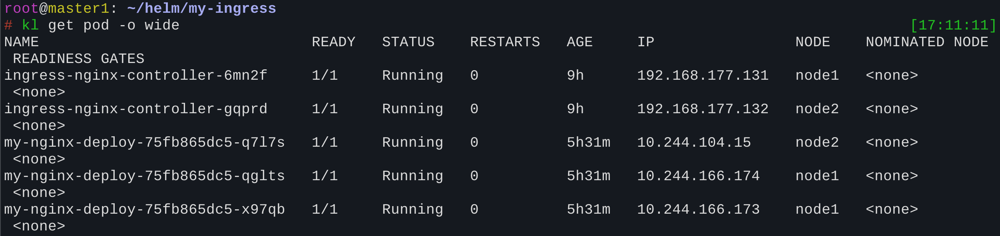
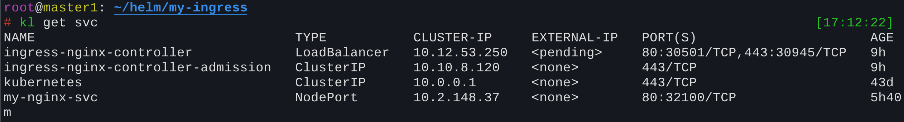
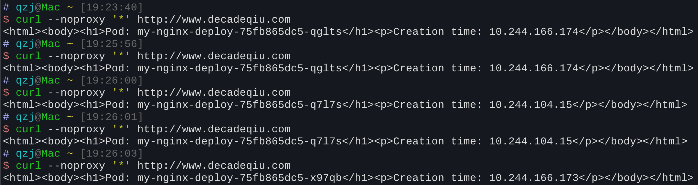
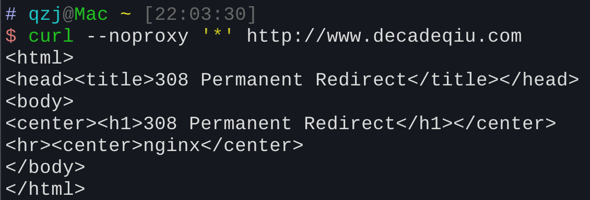
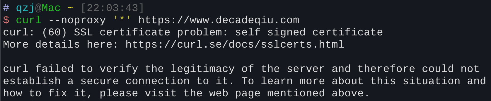
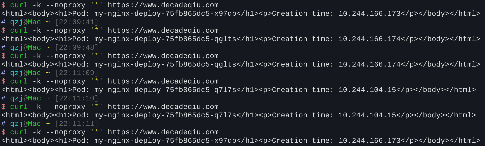
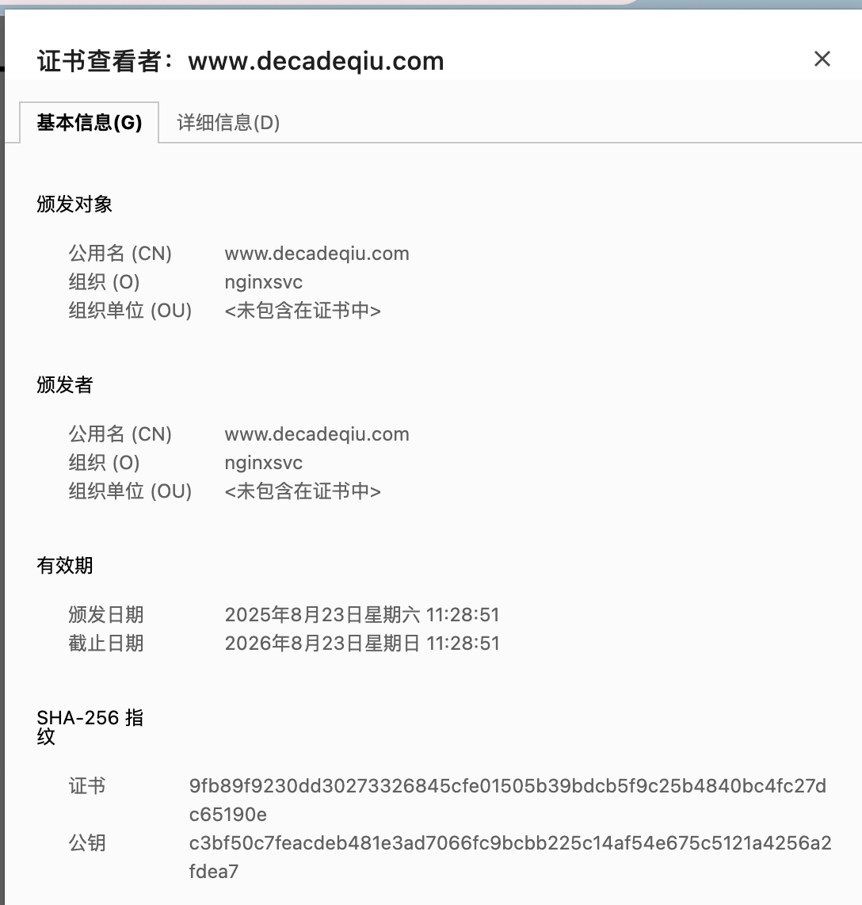
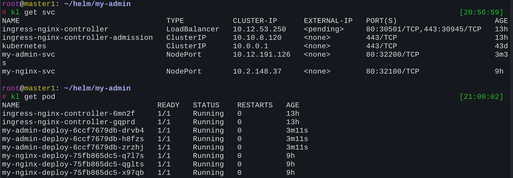
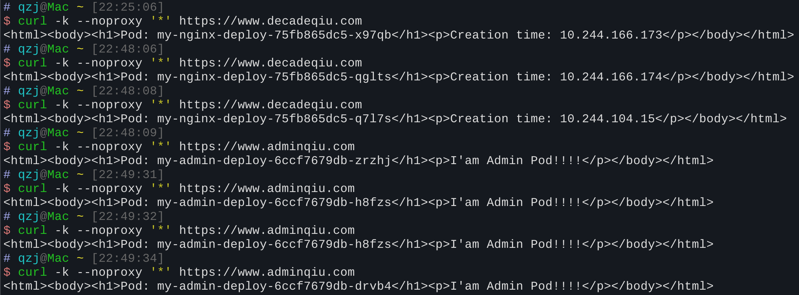

讲解了什么是 Ingress 以及 Ingress Controller，为什么要用 Ingress-nginx 来做流量转发。并通过 Helm Chart 搭建了一个 Ingress-nginx 控制器，配置了 HTTP 和 HTTPS 的代理规则，最后演示了如何基于不同域名访问不同的后端服务。
搭建一个Ingress-nginx统一处理外部流量
Ingress 本身只是一个 Kubernetes 的 资源规范，真正负责实现流量转发功能的组件是 Ingress Controller。
Ingress-nginx 是 Kubernetes 社区维护且广泛应用的一种 Ingress Controller 实现；此外，社区中也有诸如 Istio、Traefik 和 APISIX 等其他优秀的选择。
整体的流量转发路径如下：
- 外部流量到达集群的某个 Node 节点。
- Node 节点上的 Ingress Controller 根据 Ingress 资源中定义的规则（在本文中即为 Nginx 配置），将流量转发到特定的 Service。
- Service 接收到流量后，在其后端 Endpoints 之间进行负载均衡。
- 流量最终到达目标 Pod，由 Pod 内的应用程序进行业务处理。
这种方式与之前单独使用 Service 暴露服务有显著不同：
- Service 只能实现第四层（L4）的负载均衡，它工作在 TCP/UDP 协议层，仅能通过 IP + 端口 来转发流量，无法解析和处理应用层的数据。
- Ingress-nginx 则可以实现第七层（L7）的负载均衡，它工作在 HTTP/HTTPS 协议层，能够根据 IP、端口、主机名、URL路径、请求头 等更丰富的信息来路由流量，并能执行更高级的流量管理策略。
例如，我们希望将 decade.cn/api 的请求转发到
api-service，同时将 decade.cn/web 的请求转发到
web-service。由于两个路径共享相同的 IP 和端口，标准的
Service 资源无法根据 URL 路径进行区分和路由，因此无法实现这种需求。
| 特性 | Service (L4) | Ingress-nginx (L7) |
|---|---|---|
| 协议层 | TCP/UDP | HTTP/HTTPS (应用层) |
| 识别依据 | IP + 端口 | Host、Path、HTTP Header等 |
| TLS 支持 | 无（需要 Node/LoadBalancer 层支持） | 内置 TLS 终止，可统一管理证书 |
| 路由能力 | 均匀分发 | 灵活路由：域名、路径、方法、header 等 |
| 高级功能 | 无 | 请求重写、限速、熔断、访问控制、跨域、重定向等 |
安装Ingress-nginx
装一下helm源，官方源太慢了
1 | helm repo add ingress-nginx "https://helm-charts.itboon.top/ingress-nginx" |
接下来，将 Helm Chart 包下载到本地，以便我们能够自定义其
values.yaml 配置文件：
1 | helm pull ingress-nginx/ingress-nginx |
在 values.yaml 中，我们需要修改以下几个关键配置：
修改
hostNetwork为true此配置使 Ingress-nginx Pod 直接绑定并使用宿主机的网络命名空间，这意味着 Pod 将共享节点的 IP 地址。如此一来，Pod 内 Nginx 监听的 80/443 端口便直接映射为节点的 80/443 端口。外部流量访问
NodeIP:80/443即可直达 Ingress Controller Pod，无需再经过 Service 的 NodePort 转发，从而减少了一层网络跳转，提升了性能。修改
dnsPolicy为ClusterFirstWithHostNet当 Pod 启用了
hostNetwork时，需要将 DNS 策略设置为ClusterFirstWithHostNet。这样，Pod 在解析域名时，会优先使用宿主机（Node）的 DNS 配置，如果解析失败，再 fallback 到集群内部的 CoreDNS 进行解析。修改
kind为DaemonSet将部署类型修改为
DaemonSet，可以确保集群中的每个（或指定的）Node 上都运行一个 Ingress Controller Pod。这样，流量可以访问任意一个节点的 80/443 端口，并由该节点上的 Controller 实例进行统一处理和转发，实现了高可用性。关闭所有镜像的
digest校验
完成修改后，使用 Helm 安装：
1 | cd ./ingress-nginx |
编写Ingress配置文件
这里仍然使用helm去编写，因为可以动态修改配置，可以切换http代理或https代理。
1 | helm create my-nginx |
在 ingress.yaml 模板中，有几个关键字段：
nginx.ingress.kubernetes.io/ssl-redirect: "true"这是一个 Annotation（注解）。当启用 HTTPS 代理时，此注解会强制将所有传入的 HTTP 请求通过 308 永久重定向到对应的 HTTPS 地址。
rules该字段下定义的内容与原生 Nginx 的
serverblock 配置非常相似，核心是定义主机名（host）与后端服务（backend service）之间的映射规则。backend下的service就是负责管理实际业务 Pod 的 Service 资源。
1 | apiVersion: networking.k8s.io/v1 |
本文使用的service来源自部署多个前端服务
访问该服务接口时，会返回一个简单的 HTML 页面，显示提供服务的 Pod 名称及其所在的集群 IP 地址。
Http代理
values.yaml
1 | metadata: |
1 | helm install my-ingress . -f values.yaml |
部署完成后，我们可以看到集群中的资源状态：
- 图中的两个
ingress-nginx-controllerPod 是通过前面的 Helm Chart 部署的，作为 DaemonSet 在每个 Node 上运行一个实例。 - 三个
my-nginx-pod是我们实际部署的前端应用 Pod，分布在不同的 Node 上。 ingress-nginx-controller-svc是为 Controller 创建的 Service，方便从集群内部访问。- 我们部署的应用服务
my-nginx-svc则负责将流量负载均衡到后端的三个my-nginx-pod。


测试
1 | vim /etc/hosts |
由于我们指定了域名访问，所以要添加DNS解析，不然本机上不知道这个域名对应的IP。

--noproxy '*'参数用于绕过本地可能存在的代理（如 Clash），确保请求直接发送到目标 IP。如果不使用该参数，也可以选择关闭代理工具，并取消终端中的
http_proxy和https-proxy环境变量。
从返回结果可以看到，请求成功，并且多次请求后，响应来自不同的 Pod，这证明了后端 Service 的负载均衡功能已生效。
Https代理
values.yaml
1 | metadata: |
启用 HTTPS 需要 TLS 证书。这里，我们使用 openssl
命令生成一个自签名证书，并将其作为 Kubernetes Secret 资源存储起来，以便
Ingress Controller 可以引用。
1 | openssl req -x509 -sha256 -nodes -days 365 -newkey rsa:2048 -keyout tls.key -out tls.crt -subj "/CN=www.decadeqiu.com/O=nginxsvc" |
对于已存在的 Helm Release，我们使用 helm upgrade
命令来更新配置。这会将 Release 升级到一个新的版本（例如
v2），同时保留历史版本，方便后续进行版本回滚。
1 | helm upgrade my-ingress . -f values.yaml |

因为我们设置了ssl-redirect: "true"，所以http会重定向[308]到https，这是符合预期的。
但直接访问https也会出错：

这是因为我们给服务器（这里就是Ingress-nginx）提供的证书是自签名证书(self signed certificate)
相当于颁发证书的人是你自己，不是第三方的权威证书机构，所以验证不了你这个网站是否合法。两个解决方案：
- 自己申请一个合法的证书
- 强制允许自签名证书：curl加上-k参数
使用第二种方法可以验证https代理确实可以通过

在浏览器中访问也可以看到，显示我们的https访问是不安全的，因为是自签名证书

相同IP下基于不同域名访问不同服务
Ingress 最核心的价值之一，就是实现基于不同主机名（Host-based routing）或路径（Path-based routing）的七层路由。下面的示例将演示如何通过同一个 Ingress 资源，为两个不同的域名提供服务。
假设我们现在有第二个域名
www.adminqiu.com，它对应后端的管理服务。我们需要将访问该域名的流量转发到
my-admin-svc，再由其路由到后端的
my-admin-pod。
此时，两个域名 (www.decadeqiu.com 和
www.adminqiu.com) 指向的是同一个入口
IP，但需要根据主机名来区分并路由到不同的后端服务。这是标准 Service
资源无法实现的。
添加my-admin-svc和my-admin-pod
首先，我们部署一个新的应用 my-admin，它包含独立的
Deployment 和 Service (my-admin-svc)。这可以通过复制之前的
my-nginx Helm Chart
并修改相关名称来实现。为了与之前的服务区分，我们修改了其返回的 HTML
内容：
1 | initContainers: |

部署好后，svc多出一个my-admin-svc，对应的pod也多出三个my-admin-pod。
修改Ingress配置
由于现在有多个hostName和service对应，需要将原先的配置中这一块改成列表。
1 | apiVersion: networking.k8s.io/v1 |
1 | metadata: |
使用 helm upgrade 命令更新 Ingress 配置，将其升级到 v3
版本。
在测试之前，需要再次修改本地的 /etc/hosts
文件，将两个域名都映射到你的某个 Node 节点 IP。
1 | 192.168.177.131 www.decadeqiu.com www.adminqiu.com |
最终测试效果如下：
对同一个IP访问，根据不同的主机名来获得不同的服务，且每种服务的提供者可以由对应的svc再提供一个负载均衡效果。

EX：Https的请求过程
在深入分析应用层协议之前，需要明确 HTTPS 请求首先建立在 TCP 协议之上，整个过程始于 TCP 的三次握手。当 TCP 连接建立后，才开始进行应用层的 HTTPS 握手和数据传输。
我们可以使用 curl -v (verbose) 命令来观察一次完整的
HTTPS 请求和 TLS 握手过程的详细日志。
1 | $ curl -vk --noproxy '*' https://www.adminqiu.com |
0. DNS 解析 (将域名转换为 IP 地址)
这是所有网络请求的第一步。客户端会通过本地的 hosts
文件或远程的 DNS 服务器，将想要访问的域名（如
www.adminqiu.com）解析为目标服务器的 IP
地址。这个IP地址通常是负责处理 HTTPS 请求的
Ingress-nginx 所在的节点。
1. TCP 三次握手 (建立传输通道)
在获得 IP 地址后，客户端会与服务器的 443 端口发起
TCP
连接。这一步通过著名的“三次握手”确保客户端和服务端之间的网络传输通道畅通无阻。
Connected to ... port 443
就表明这个底层通道已经建立好了。
2. TLS 1.3 握手 (建立加密通道)
这是整个 HTTPS 请求的核心。在 TCP 通道之上，客户端与服务端会进行 TLS 握手，以建立一个安全的、加密的通信隧道。
ClientHello(客户端问好)- 客户端发起握手，像是在发送一份“能力清单”，里面包含：
- 我支持的 TLS 版本（如 TLS 1.3）
- 我支持的 密码套件（如
TLS_AES_256_GCM_SHA384） - 我的 密钥共享参数（ECDHE 曲线），这是为了稍后进行临时密钥交换。这是第一个公钥，客户端在这里生成一个临时的、私有的椭圆曲线密钥，并用它生成对应的公钥，将公钥发送给服务器。
- 我想访问的域名
SNI（
www.adminqiu.com） - 我支持的应用协议 ALPN（如
h2或http/1.1）
- 客户端发起握手，像是在发送一份“能力清单”，里面包含：
ServerHello(服务端应答)- 服务端收到
ClientHello后，会从客户端提供的清单中进行选择：- 最终的 TLS 版本和 密码套件
- 最终的 ECDHE 椭圆曲线/密钥共享参数。**服务端在这里也生成一个临时的、私有的椭圆曲线密钥，并用它生成对应的公钥，将公钥发送给客户端。
- 服务端收到
在 TLS 1.3 中，客户端和服务器各自生成一个临时的、非对称的公私钥对，然后通过 ECDHE算法，在不传输私钥的情况下，安全地计算出一个共享主密钥 (Shared Secret)。这个过程在
ServerHello之后进行：
- 客户端使用自己的临时私钥，和服务端发送过来的临时公钥，通过 ECDHE 算法计算出一个共享密钥。
- 服务端使用自己的临时私钥，和客户端发送过来的临时公钥，通过 ECDHE 算法计算出同样的共享密钥。
至此，双方都独立且安全地得到了一个相同的共享密钥，并且这个密钥即使被中间人截获了历史数据，也无法通过截获的公钥推算出私钥，从而保证了前向保密性 (Forward Secrecy)
2.1. 证书与身份验证
Certificate(服务端身份证明)- 服务端发送证书链（包括站点证书和中间 CA 证书等），客户端用它来验证服务端的身份。如果 Ingress-nginx 找不到匹配的证书，它会下发一个默认或自签的“假证书”。
CertificateVerify(服务端私钥签名)- 服务端使用证书的私钥对握手过程的摘要进行签名，发送给客户端。这证明了它确实拥有证书对应的私钥，并且这个私钥就是服务器的长期私钥。
- 这与ECDHE的临时密钥不同，它的作用是验证服务器的身份，而不是用于数据加密。
2.2. 握手结束与密钥派生
Finished- 服务端和客户端先后发送
Finished消息，表示握手完成。
- 服务端和客户端先后发送
- 密钥派生 (
HKDF)- 在握手结束后，双方都使用 HKDF（HMAC-based Key Derivation
Function），以 ECDHE
协商出的共享密钥为基础，派生出用于后续加密通信的：
- 握手密钥 (Handshake Key)
- 应用数据密钥 (Application Data Key)
- 在握手结束后，双方都使用 HKDF（HMAC-based Key Derivation
Function），以 ECDHE
协商出的共享密钥为基础，派生出用于后续加密通信的：
在
HKDF派生出应用数据密钥后，客户端和服务器之间的所有通信都将使用这个密钥进行对称加密和解密。比如，客户端发送的 HTTP 请求（GET、POST 等）和服务器返回的响应，都会被这个密钥加密，即使数据被拦截，也无法被读取。
这个过程是完全自动且对用户透明的。
3. 应用数据传输 (加密通信)
- 加密通道建立好后，客户端就可以发送加密的 HTTP 请求了。
- 如果在 TLS 握手时 ALPN 协议协商选择了
h2，则通信将使用 HTTP/2 的帧格式；否则，将使用传统的 HTTP/1.1 协议。
ECDHE交换原理
密钥的生成
客户端：
- 客户端随机生成一个私钥，我们用字母 a 表示。
- 客户端根据椭圆曲线的数学特性，使用基点 G 和私钥 a 计算出公钥 A： A = a × G
- 客户端将公钥 A 包含在
ClientHello消息中发送给服务器。
服务器端：
- 服务器同样随机生成一个私钥，我们用字母 b 表示。
- 服务器根据椭圆曲线的数学特性，使用基点 G 和私钥 b 计算出公钥 B： B = b × G
- 服务器将公钥 B 包含在
ServerHello消息中发送给客户端。
共享密钥的协商
其核心思想是：双方都用对方的公钥和自己的私钥进行计算，最终得到同一个结果，而这个结果就是共享密钥。
客户端计算共享密钥：
- 客户端接收到服务器发送的公钥 B。
- 客户端利用自己的私钥 a 和服务器的公钥 B 进行计算： S = a × B
- 将服务器公钥 B 的表达式代入，得到： S = a × (b × G)
服务器端计算共享密钥：
- 服务器接收到客户端发送的公钥 A。
- 服务器利用自己的私钥 b 和客户端的公钥 A 进行计算： S′ = b × A
- 将客户端公钥 A 的表达式代入，得到： S′ = b × (a × G)
因为椭圆曲线运算的交换律和结合律，我们可以得出： S = a × (b × G) = (a × b) × G S′ = b × (a × G) = (b × a) × G
所以，S = S′。客户端和服务器最终都计算出了相同的共享密钥，我们称之为 S。
这个 S 就是后续所有数据加密的基础，数据加密的密钥是通过这个S计算得到。
为什么这个过程是安全的？
这个过程的关键在于，即使攻击者同时截获了客户端的公钥 A 和服务器的公钥 B，在已知 A 和 B 的情况下，也无法在有限时间内反向计算出客户端的私钥 a 或服务器的私钥 b。这就是离散对数问题（Discrete Logarithm Problem）的难解性，确保了整个密钥交换过程的安全性。因此，即使公钥被公开，私钥仍然是安全的，从而保证了前向保密性。